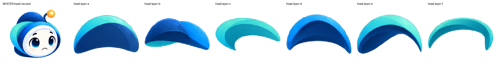
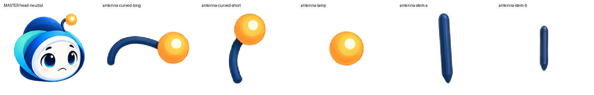
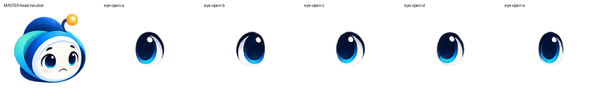
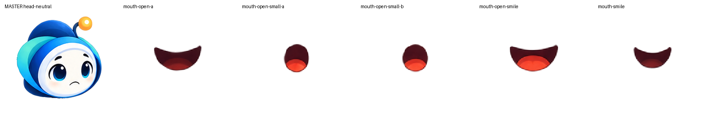

ONE · QA visual
Revisión fidelity-first. Nada se promueve sólo por validez técnica.
Preparar reconstrucción de head-neutral
La limpieza facial anterior quedó validada visualmente. Antes de reconstruir, hay que determinar qué variantes existentes corresponden exactamente al neutral. No selecciones nada todavía: esta pantalla sólo muestra el conjunto acotado que debe mapearse.
Master neutral · objetivo

Candidatos existentes · comparación
21 candidatos semánticamente clasificados + 1 pieza azul en cuarentena. La pieza azul ya no participa del mapeo de boca.
Comparación directa por grupo
Cada fila coloca el master neutral junto a las variantes existentes. Es material de mapeo, no una reconstrucción.
Hood

Antena

Ojos

Bocas

Mapeo ampliado de head-neutral
Comparaciones de a una pieza: master a la izquierda y candidato a la derecha. Esto evita que las variantes queden demasiado pequeñas. No hay que aprobar assets todavía; sólo identificar correspondencias visuales.
Historial / evidencia técnica · no requiere revisión
Incluye extracciones faciales, recuperaciones de borde, tiles y correcciones ya revisadas. Se conserva sólo para trazabilidad.